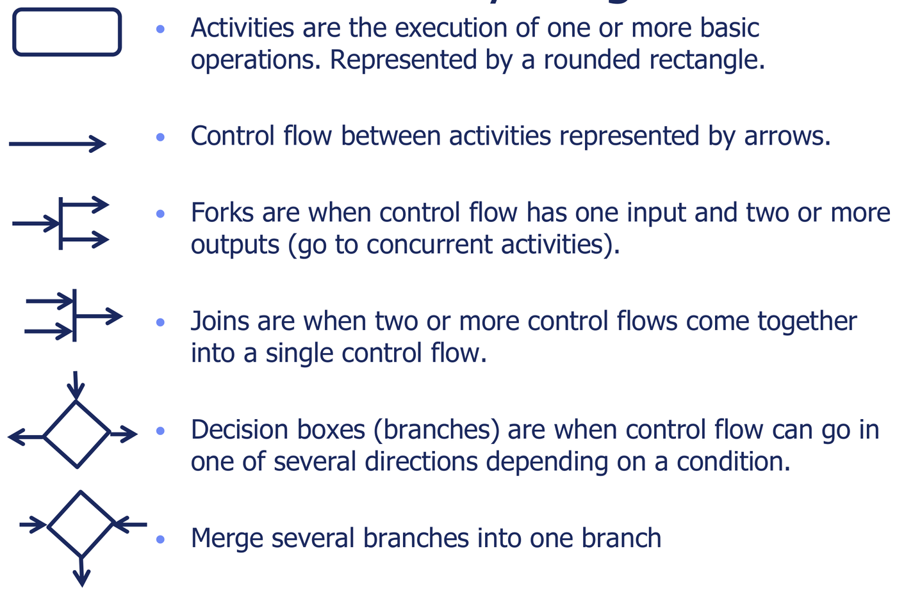
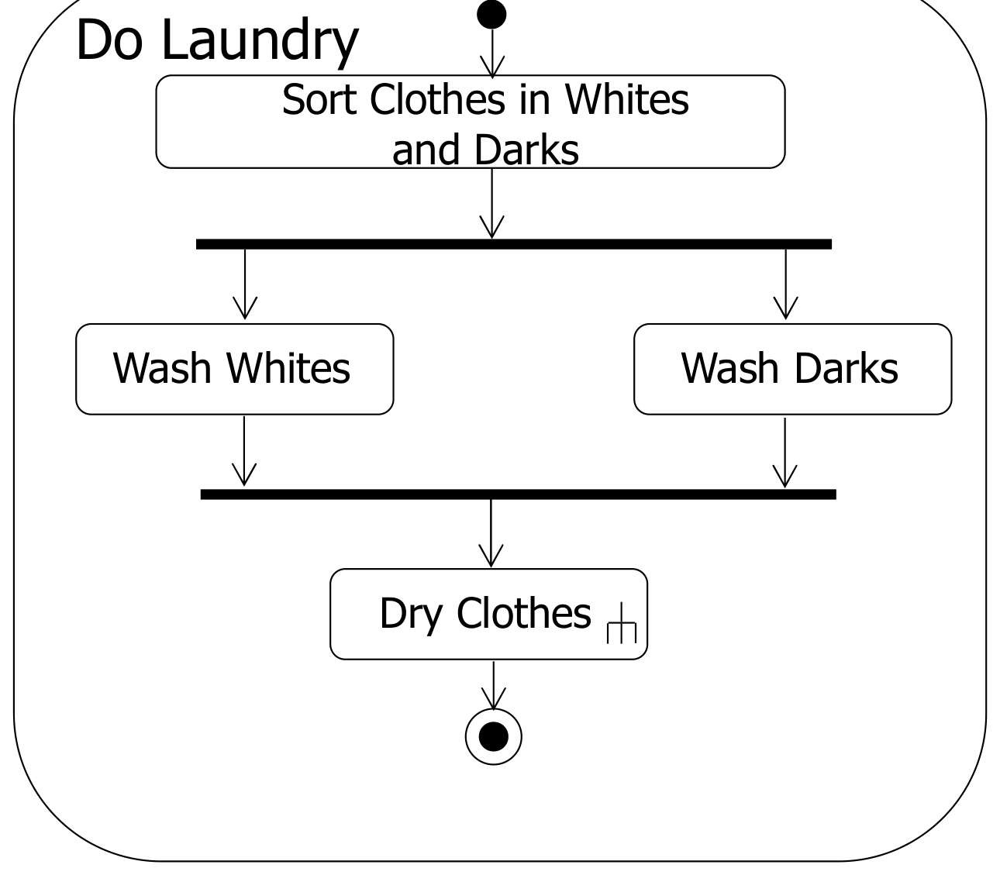
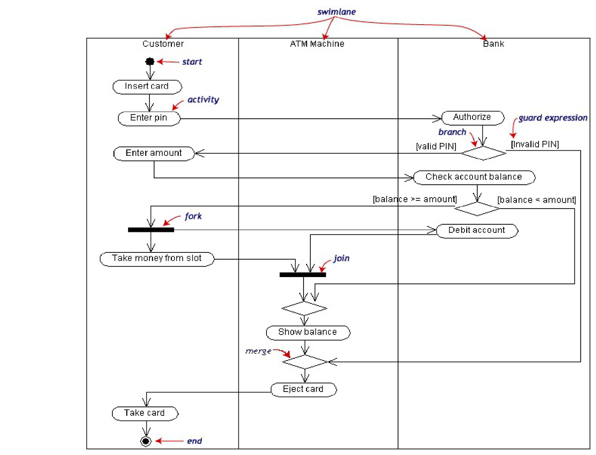
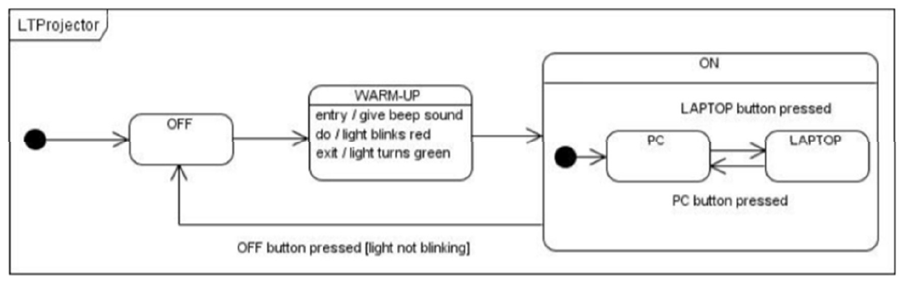

While the conceptual class model captures the static architecture of a system, dynamic modeling specifies how system components behave over time in response to external events. Dynamic models formalize execution sequencing, state transitions, conditional branching, and concurrent workflows.
UML provides two complementary notations for dynamic modeling:
- State Machine Diagrams: Model the discrete lifecycle and event-driven state transitions of a single object or system entity.
- Activity Diagrams: Model the operational workflow and multi-party procedural coordination across multiple collaborating actors and subsystems.
1. State Machine Diagrams
A State Machine Diagram (Statechart) models the behavior of an entity by specifying its sequence of states throughout its lifetime in response to events:

Core Structural Elements
- State (Rounded Rectangle): A condition or situation
in the life of an object during which it satisfies some invariant,
performs an ongoing activity, or waits for an external event.
entry / action: Executed immediately and atomically upon entering the state.do / activity: An ongoing, interruptible execution carried out while remaining in the state.exit / action: Executed immediately and atomically upon exiting the state.
- Initial State (Filled Circle): Default entry point into the state machine.
- Final State (Bullseye Circle): Terminal completion of the entity’s lifecycle.
- Transition (Directed Arrow): An instantaneous change of state triggered by an event.
Transition Anatomy
Every transition label follows a strict three-part syntax:
- Event: An asynchronous trigger, method call, or
timer tick that initiates the transition
(e.g.
pressPowerButton,after(30s)). - Guard Condition (
[guard]): A boolean expression enclosed in square brackets. The transition fires only if the guard evaluates to true when the event arrives. Guards on diverging branches from the same state must be mutually exclusive. - Action (
/ action): A transient, atomic computation or output signal executed during the transition itself (e.g./ turnOnLamp(),/ alert()).
Dialog Maps and Composite States
When modeling user interfaces, states represent visible screens or interactive dialog modes (a Dialog Map).
- Composite State: A nested state enclosing a complete sub-state machine.
- An outgoing transition drawn from the boundary of a composite state applies to all contained sub-states, cleanly modeling global actions (e.g., clicking “Cancel” or encountering a “Timeout” from anywhere inside a multi-step checkout wizard).
2. Activity Diagrams
An Activity Diagram models a procedural business process or operation as a coordinated flow of actions. Unlike state machine diagrams (which focus on what an entity is), activity diagrams focus on what the system does.

Control Flow Constructs
| Construct | UML Symbol | Semantic Rule | Invariant |
|---|---|---|---|
| Action Node | Rounded rectangle | An atomic, non-interruptible step within a workflow. | Control advances automatically upon completion. |
| Control Flow | Directed solid line | Hand-off of control from one completed action to the next. | Directional sequencing. |
| Decision Node | Diamond (1 input, outputs) | Evaluates conditions and selects exactly one outgoing path. | Every outgoing branch must have a mutually
exclusive guard ([condition]). |
| Merge Node | Diamond ( inputs, 1 output) | Brings together alternate paths chosen by a decision node. | Executes outgoing action when any one input arrives (no synchronization). |
| Fork Node | Solid horizontal/vertical bar (1 input, outputs) | Splits a single incoming execution flow into multiple parallel/concurrent flows. | All outgoing branches execute concurrently. |
| Join Node | Solid horizontal/vertical bar ( inputs, 1 output) | Synchronizes concurrent flows. | Synchronization barrier: Waits until all incoming flows arrive before continuing. |

Partitioning with Swimlanes
To model responsibilities across multiple actors or architectural tiers, activity diagrams use swimlanes (activity partitions). Each column or row represents a distinct actor, subsystem, or class:

- Actions placed within a swimlane are executed exclusively by that partition’s owner.
- Control flow edges crossing between swimlanes model inter-actor communication, remote procedure calls, or interface invocations.
3. Selecting Between State Machine and Activity Diagrams
| Decision Factor | State Machine Diagram | Activity Diagram |
|---|---|---|
| Primary Focus | The lifecycle and discrete conditions of one entity. | The step-by-step workflow of a process or use case. |
| Trigger Mechanism | Event-driven: Sits idle in a state until an external event arrives. | Flow-driven: Advances immediately to the next action upon completion. |
| Concurrency Model | Orthogonal sub-states (rare in simple models). | Explicit parallel forks and join synchronization bars. |
| Exam Scenario Clues | “Model the states and modes of the Projector Controller / Silo / Account.” | “Model the end-to-end checkout workflow across Customer, Server, and Bank.” |
4. Official Tutorial Problems
Tutorial 3 Q2: Projector controller panel state machine diagram (dialog map)
Question: Model the projector’s system behavior using a state machine diagram (dialog map) based on the following operational requirements:
- When powered off, pressing the power button initiates lamp warmup for 30 seconds before entering the active display mode.
- In the active display mode, pressing the Source button cycles through input channels (HDMI, VGA, USB).
- Pressing the Blank button turns off the lamp without powering down the cooling fan; pressing Blank again restores projection.
- Pressing the Power button from any active state enters a cooling state where the fan runs for 60 seconds before entering Standby.
- If the temperature exceeds 80°C at any time during operation, an emergency shutdown transition occurs directly into a thermal error state.
Solution:

State Lifecycle Trace
| State | Entry Action | Outgoing Transition Trigger | Target State |
|---|---|---|---|
| Standby (Power Off) | display(StandbyLED) |
pressPower [pluggedIn] |
Warming Up |
| Warming Up | startWarmupTimer(30s) |
after(30s) |
Projecting (Active) |
| Projecting (Active) | lampOn(); fanOn() |
pressSourcepressBlankpressPowertemp > 80°C |
Projecting (Cycle
Source) Blanked Cooling Down Thermal Error |
| Blanked | lampOff() |
pressBlankpressPowertemp > 80°C |
Projecting (Active) Cooling Down Thermal Error |
| Cooling Down | startCoolTimer(60s); fanMax() |
after(60s) |
Standby |
| Thermal Error | alertBeep(); fanMax() |
resetButton |
Cooling Down |
Modeling Invariants
- The emergency transition
[temp > 80°C]applies to all active operating modes; in hierarchical modeling, grouping Warming Up, Projecting, and Blanked into a compositeActiveOperationstate allows a single high-level transition arrow to targetThermal Error. - The transition from Cooling Down back to
Standby is a time-triggered transition
(
after(60s)), requiring no user intervention.